La Generalitat gastará dos billones de pesetas y reducirá un 25% su déficit.
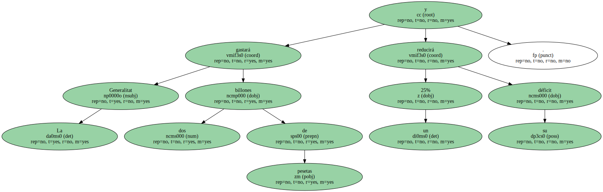Catalunya crecerá en el 2000 igual que en el año en curso , el 3,9% , pero con menos impulso del consumo y más peso de las exportaciones.
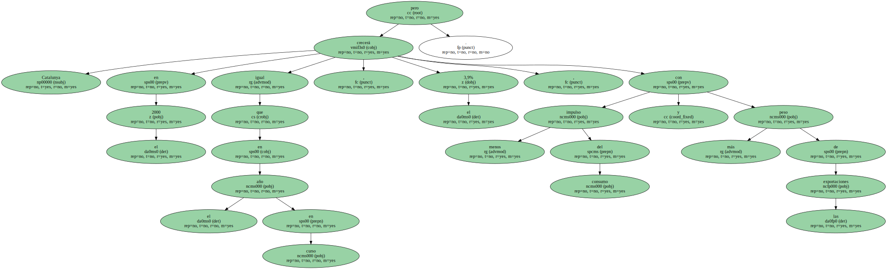Ésta es la previsión que maneja el conseller de Economia , Artur Mas , en el primer esbozo del Presupuesto de la Generalitat para el 2000 presentado ayer , en el que prevé una rebaja del déficit del 25% , hasta 11.250 millones de pesetas ( 67,61 millones de euros ) , con el objetivo de lograr el equilibrio presupuestario en el 2001.
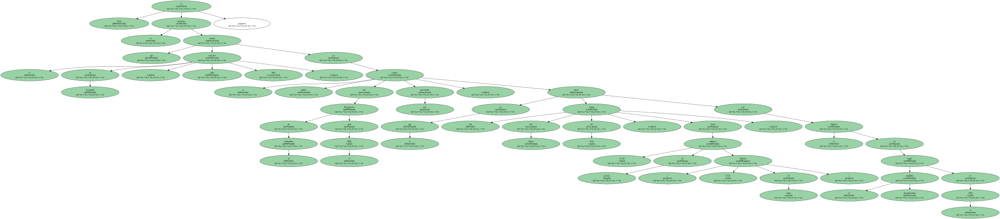Artur Mas , tras presentar ayer las líneas maestras de los presupuestos del 2000.

Mas , un día después de tomar posesión del departamento , que arrebata a Treball el control de las mutualidades y aglutinará las competencias autonómicas sobre seguros , reclamó a la oposición una tregua los 100 primeros días de gestión , que " a cualquier gobierno se le respetan ".
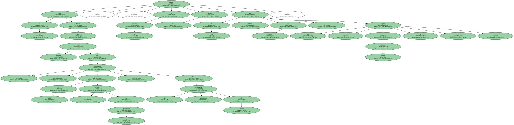También pidió un plazo prudencial para elaborar las cuentas para el 2000 y aprobarlas durante el primer cuatrimestre.
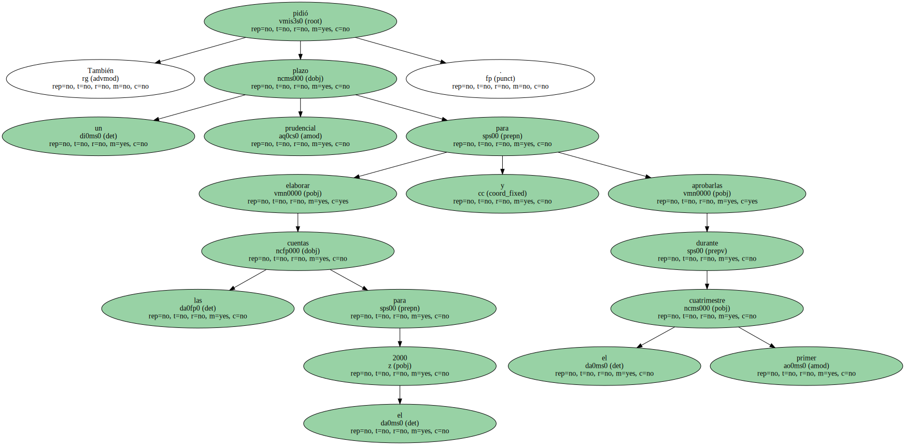Toda la oposición reclama que presente su proyecto antes de enero , lo que Mas consideró " imposible ".
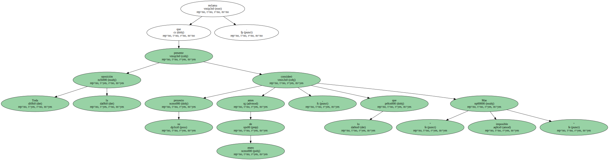Así se lo explicó al líder de la oposición , Pasqual Maragall.
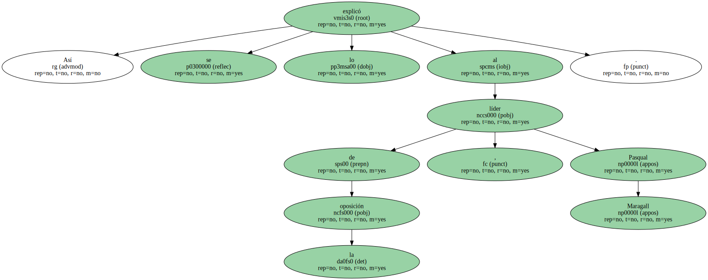Mas destacó que en el 2000 Catalunya cambiará de patrón de crecimiento.
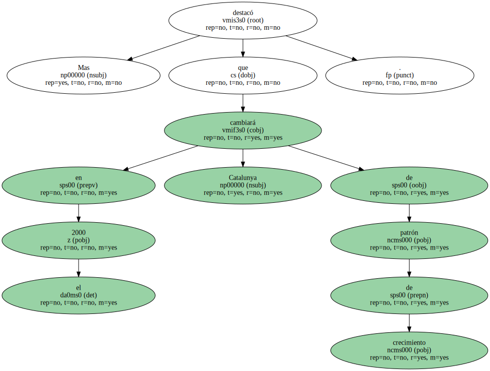El consumo experimentará una ligera reducción , lo que permitirá bajar la inflación al 2,2%.
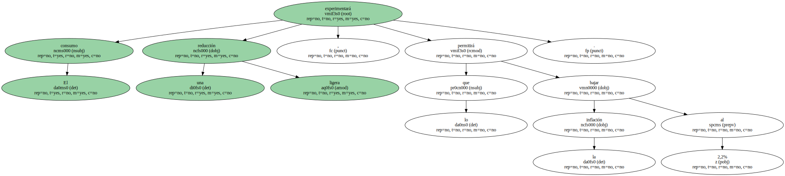En la actualidad , la tasa anual está en el 3,1%.

Además , las exportaciones , que se ralentizaron , recuperarán mayor dinamismo industrial.
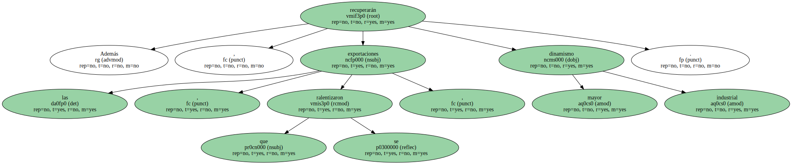Destacó que la sanidad , la enseñanza y la protección a la familia serán prioritarias.
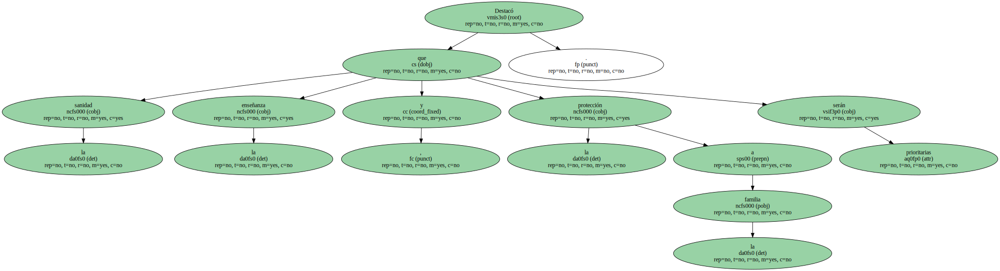Recordó que el Govern fijará una partida extra de fondos propios de , " como mínimo " , 15.000 millones ( 90,15 millones de euros ) para enjugar la carga financiera sanitaria , como hizo en 1999.

También dijo que el Govern hará un " esfuerzo especial " en inversión , que crecerá al menos como el producto interior bruto ( PIB ) nominal , el 6,1% , el 3,9% real ( restada la inflación ).
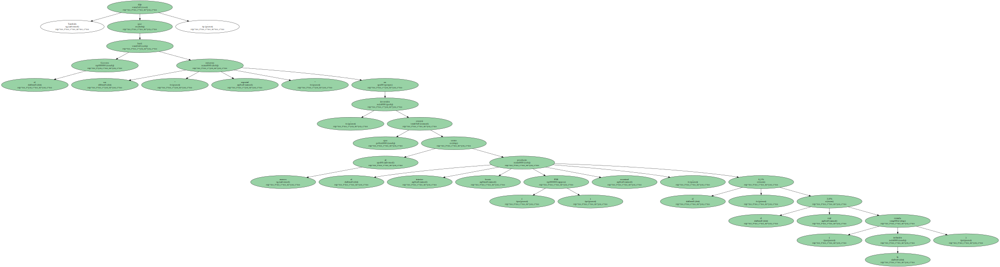Las cuentas de la Generalitat llegarán a dos billones ( 12.020 millones de euros ) , frente a 1,8 billones ( 10.818 millones de euros ) este año.
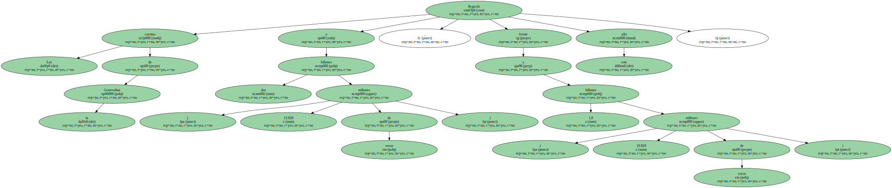Ayudas familiares no se aplicará la deducción de 100.000 pesetas ( 601 euros ) en el IRPF para las familias con hijos de hasta tres años o minusválidos o ascendientes a cargo , recogida en el programa electoral de CiU , que Mas supeditó a obtener el pacto fiscal.
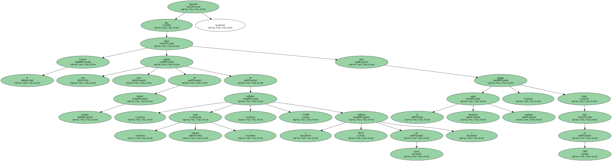Sí se ampliará la ayuda de 55.000 pesetas ( 330,6 euros ) para familias con ingresos inferiores a 2,4 millones brutos anuales e hijos con menos de tres años.
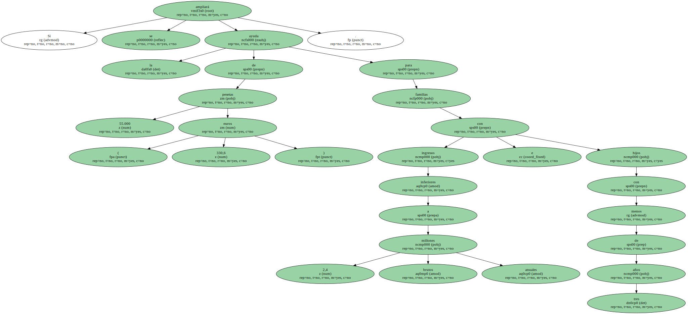Este apoyo empezó a aplicarse en septiembre para niños de dos a tres años.
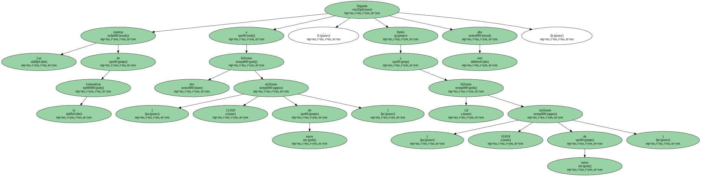En el 2000 se incluirán las familias con hijos de uno a dos años y en el 2001 , el resto , hasta llegar a las 159.000 familias en esta situación.
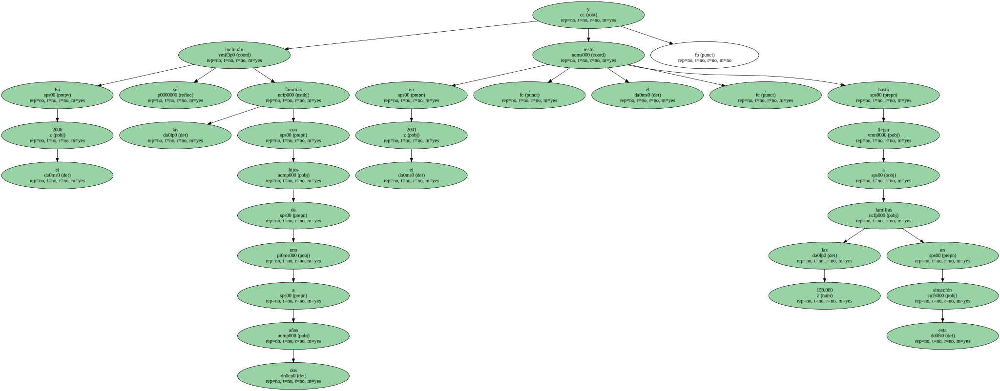